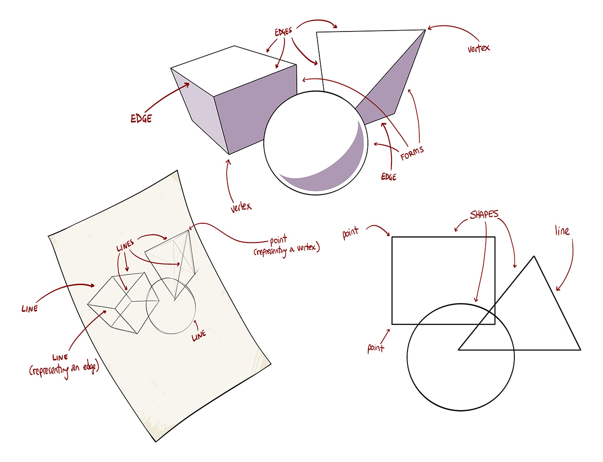
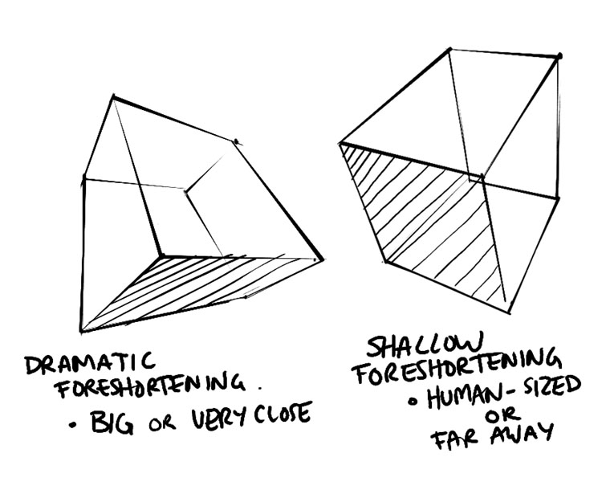
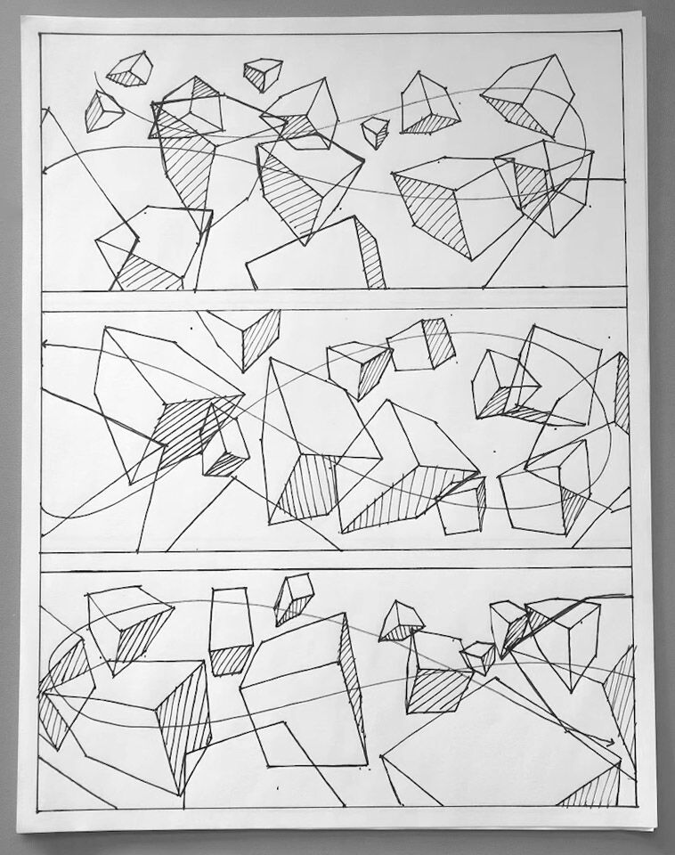

drawabox 盒子笔记
我不得不吐槽，我这里属于是利用这篇教程作为思考材料，去想很多更底层的东西了，关于学习本身的方法论。但这实际上可能也是drawabox的作者想要看到的，他也是很热衷于分享自己的哲学的。
然后是盒子，老实说，我对盒子有一种没有来由的害怕，但我马上又把自己掰回来——我晓得，我以前练过很多盒子，我对背后的透视理论早已烂熟于心只是欠缺大量实践，我能画出来看上去正常的盒子，这么一想，我就不那么害怕了。这种害怕，大概是对跳出舒适区的害怕吧，我对椭圆目前还是害怕的，对线条的害怕则没那么大。（GPT 表示这害怕背后还有倦怠和厌烦的部分，我需要保持警惕）
重点在于，识别它，明确它是进步所必要的，用理性和热情去压倒它。
但我明显该调整心态——跳出舒适区，虽然我会痛苦地要抓狂，但这也是改变的信号，我该看到它积极的一面。（这话也不是第一次对自己说啦，但重复是必要的，年年讲月月讲天天讲（虽然这话也不是第一次讲了））。
https://drawabox.com/lesson/1/6
因为理论上的东西我基本上都掌握过了一遍，而且肯定比 drawabox 中讲的东西更有深度，所以理论这里不详述，我最关心的是实践方面。
drawabox 强调，它不是一个透视课程，而是塑造空间思维——重塑大脑关于感知和处理三维空间的教程。
drawabox 强调，它不会教给我规律，要点之类的东西，它要做的，是训练和塑造我的直觉本能，让我专注在我想要表达的部分，而只有真正需要精确地解决一些空间问题的时候，线性透视才有其必要性。
顺便，DS补充道，直觉是模式识别的结果——大脑通过海量练习积累视觉数据库，快速匹配场景。
这听上去多么吸引人！这实际上也是说，空间思维，是一种体育活动，是可以训练的，而非是像线性透视那样靠规则驱动的，是学习的。就比如骑自行车，骑自行车我是靠学理论学出来的吗？不是，我是靠摔出来的，我是在开发、利用大脑所既有的能力（“既有”这两个字该狠狠标红）。无论是跑步，还是投掷，甚至是开车，我们都是在利用大脑的相关的能力。
而……drawabox是如何训练这个的？好像是…………………………250box挑战，这可真是超大规模的挑战了，每一个都认真画，一天画5个，50天才能完成哩！如果drawabox阻塞在这里，我倒是可能会很开心——我可以去把更多精力放到主题学习和项目上了。
线性透视将来重新学习的必要……我当前先不深入思考这个，但我怀疑，除非我将来跑去做机械设计啥的，我大概是没有机会用上线性透视的那些玩意儿的。即使是复杂的场景，我也怀疑大概率我会定出来大框架后就更多靠感觉。Krenz 的透视课程本身也是偏重于实践的，毕竟它连视圈啊测点的概念都不会引入。这实际上也是在否定那种基于尺规作图的线性透视的必要性，但它的理论是绝对值得学习的。
因此，对线性透视，应当抱持着这样的态度——我用它来做解释，用它来 debug，但不用它来作为主导，作为我绘画的基础。
理论部分
从这一章开始，终于不再是二维的线条、椭圆了，现在是三维的盒子了，空间思维的开始之处。
drawabox 强调在术语上区分 2D 和 3D：
2D 上，形状 Shape，线条 Line，点 Point，这些指的都是画布上的东西。
3D 上，体积 Form，边缘 Edge，顶点 Vertex，这些指的都是实际物体上的东西，投影到画布上成为上面的 2D 的东西，

投影 Projection，是使用低维度的物体表现更高维度的物体的方式，如二维画布表现三维物体，这就是一种投影，三维物体投影到这个二维画布上。
透视 Perspective（投影）其实只是表示立体感的一种方式，模拟人眼（和相机）视觉的一种方式，还有其他方式表示立体感，如平行投影、轴测投影，三视图。这实际上也是这样一个观点——透视只是一个工具。当然，这是以存在其他使用 2D 表现 3D 的方式作为出发点，考虑到我们实际操作时，总是在画透视投影，它也可说是框架了。
透视投影的核心问题在于，透视缩短，要是没有这个性质，就全是平行投影了，正是因为这个性质，才能在二维平面上复现出如同真实物体般的幻觉。就这个意义上来说，其实平行投影也是一种透视投影，只不过物体离得无穷远罢了。
透视缩短让你无法直接测量所有不平行于画布的线条所对应的边缘的长度。
https://drawabox.com/lesson/1/8，这一篇很有趣，提出了一个关于消失点的心智模型，这个心智模型从俯视图出发，但创造性地认为地平线是一个圆而非直线。显然，这里的变量就是画布的大小了（drawabox的作者没有说到这一点，没必要吧大概，这就进入到尺规作图的领域了）。
这篇也说，消失点的位置是不能由我们任意控制的，它是由边缘在空间中的朝向所决定的，但这（在理论上）是错误的——一点和两点透视，消失点的位置是可以任意控制的，只需要让不同物体的消失点在焦距上保持一致性即可。
它提到了透视缩短的程度——是戏剧性的缩短，还是浅度的缩短，并且它正确提到，戏剧性的缩短，要么是物体很大，要么是距离镜头很近；而浅度的缩短，更接近人所看到的缩短，要么是物体大小很小，要么是离镜头距离适中。

它没有提到焦距，仅提到物体和镜头的距离……这其实不太好，因为真正画作品的时候，肯定会以摄影作品作为部分参考的，这时候理解摄影中的术语和透视中的术语的关系是重要的。
透视缩短的程度，应当保持一致性，不要搞得远处的小的物体有更大的透视缩短。
好吧，理论部分我看完了，没有新东西，反而我自己的思考我觉得更有价值。
我最关心的是作业，它肯定会给我整出一些新花样。
作业部分
Plotted Perspective
Plot，用直尺去画两点透视图。这个没啥好说的，我对这个作业不打算做满，我画一个框就行了。
作者有一个观点值得注意——要检查你的图画的对不对？只需要看背后那根垂直线就行了，如果之前的线条都画的没错，背后那根线应当是垂直的，而如果不垂直，就证明发生了错误（无数次微小的误差累计的结果），下次需要注意。
Rough Perspective
这一节就要丢掉消失点了。作者指出了他的教学论：先引入严谨的技术工具，再逐步撤除它们，让这些机制内化为你的潜意识。并再次强调了drawabox的终极目标：无需有意识地思考物体怎么绘制，从而能把注意力放到要绘制的物体本身（而非它投影在画布上的模样）。要作比喻的话，就像我的画笔在直接穿过画布，去直接接触物体的形状和边缘，我的脑子根本没有考虑画布本身，只有画布上的东西所代表的东西，就像我骑自行车时只考虑要去到哪里，不考虑怎么握龙头踩踏板。这，就是所谓的心流状态。但实际上并没有这么纯粹，总是会遇到未曾预料到的障碍（特别是你是初学者的时候），从而让你被迫回到当下，回到更底层的东西去思考、行动。
而这种训练，必须要保持高度的专注！而且必须要有反馈！如何反馈？用透视理论去进行debug。
这种把东西内化进去成为本能，是所谓的程序性知识 Procedural Knowledge，它和陈述性知识 Declarative Knowledge 是相对的。我过去学的编程，数学，更多接触的是陈述性知识，它用文字表述，要靠理解去吸收；程序性知识则难以用文字表述（比如，一个特定方向的特定胖瘦的椭圆怎么画，你怎么用文字表述？对任意方向任意胖瘦的椭圆你都要用相应的文字去表述吗？这是不可能逐个枚举出来的，但确实是要分开训练的），而通过训练去进步。
陈述性知识，就如同编程那样，容易分而治之，逐模块去学习，而程序性知识，它就更像一个原子的东西无法再分，得像训练神经网络那样，通过大量的训练逐步地调整参数，最终得到一个可用的直觉的系统。
但这其实是表象，对于编程，等到精进的时候，其实也变成了程序性知识了；而对于画画，你也仍旧能够部分地拆分出各种模块分而治之，所以程序性知识和陈述性知识，它们之间其实是相对的，无法一概而论。
但对目前的我来说，我应当认为画画，至少是这里的透视、空间思维，是程序性知识，需要通过大量训练去掌握很多东西，这点我需要牢记。
对于程序性知识，它的学习方法是刻意练习，刻意练习就需要明确清晰的反馈。对于徒手透视图的绘制的训练，反馈就是使用透视原理去进行“debug”；对于我很久以前提到的turnaround动画训练（惭愧，我到现在还没开始实践它），反馈就是用肉眼看旋转着的物体是否有不符合大脑预计的变形（和透视原理，但靠大脑的直觉是主要的）。
这对绘画以外的领域也适用，比如对吉他，练习方式就是去爬格子，练音阶，琶音，和弦……反馈方式就是看手和脑子是否卡住，是否合节拍器的拍子。
推而广之，比如学习头像绘制，我就：
- 先学原理，如鲁米斯头部
- 大量练习靠直觉画出头部
- 对每个练习的结果，用鲁米斯头部去检验，明确误差（当然，这里的鲁米斯头部你也得保证你画的是正确的，这就是另一回事了，这就是说，反馈机制必须可靠）
这就是一个闭环练习法——理论建构 → 大量练习 → 精确反馈，这就是掌握程序性知识的一般的方法论。当然，这个环也是螺旋上升的，这是废话。
训练神经网络这个比喻我不是第一次提了，这个比喻也带来一些东西：比如你的训练的数据要够好（练的要对，反馈的要明确），要榨干每一次训练；以及你可以做针对性训练，针对性地调整部分参数（如通过练特定方向的线条）。
上面的理论的东西后面要单拎出来写一篇文章。
闲话休提。这个练习只画一点透视，要画2张纸，对每张纸，画三个框，对每个框，画出地平线，定出心点，然后，重复6次下面的步骤（6x3x2=36个）：
- 用ghosting法标出一个矩形的4个点（用ghosting法保证尽量精确，不止靠目测），并绘制这个矩形，这是盒子平行于画布的面
- 定出盒子的深度：
- 使用ghosting法尝试找到心点和其中一个顶点的这条直线，但不要真画出来！只是在脑子里有个印象
- 在这条直线上定出一个点
- 对四个顶点做同样操作（注意要保证四个顶点深度一致，即它们也是一个矩形）
- 现在，盒子的八个顶点全都定出来了，用ghosting法给它们全部连起来
然后，完成每一个框，或者每一页后，使用红笔和直尺去延伸每个向心点的线条，检查它是否真的指向了心点。大部分的都会有微妙的偏差，这里的重点是，识别偏差的模式，在下次再实践的时候尝试避免犯错。
做任何操作的时候，要在脑子里明确，究竟自己在做什么，只要能给自己的所作所为找到理由，便能够有优化的空间，而若是随心所欲乱画，那就难以判断了。
这时候我当然会质疑——
- 为什么是一点透视，不是二点透视？
- 为什么要过心点做ghosting？在实际绘画中，灭点通常总是在画布外，因此画的时候更多是靠直觉啊？
作者说，这个练习是习惯于平行的线条汇聚于灭点这个运动的规律……同时接受“大概就好”实际上就是足够好的事实——就传达想法而言，视觉上的完美远不如其他因素重要。
这个作业我等后面再做，先把理论过完。
Rotated Boxes
这个练习更是不知所谓，给我看晕了！但试着思考作者想要干啥吧……这个练习作者说很难做对，但也不要求做对，只要做的时候反复思考练习的要点，反复意识自己的每一笔在干什么，这样大脑就能够熟悉在画纸上捕捉三维空间的思考方式。
这个练习，说是，要学习依赖场景中已经存在的其他元素，其他的边缘和面去进行定位，这对空间思维是非常重要的，是超越线性透视的至关重要的一步。这点我之前确实没想过……一想确实如此。联想到我之前所研究的建构，画空间中的物体的一般论不就是先把网格或最大的方块先搭起来，再去依据它去画吗？只不过这里不用尺规，更多靠和其他物体的相对关系去看罢了。
这个练习最诡异的一点是它实际上没有画真正的立方体，它画出来的是前面大后面小的，棱台似的东西（不如此无法紧密贴合成一个类似球形）。但作者称这个无关紧要，因为这个练习根本不处理消失点，所以盒子的实际形状是无关紧要的。但真的能够如此吗，我表示怀疑……
再说，作者自己的示例……也值得吐槽。
旋转方块确实是个难题，我得把之前的turnaround动画练习提上日程了。我需要复习blender的动画功能（用来做客观反馈，倘若我发现我的大脑的空间直觉也无法做反馈时，比如绘制现实中少见的角度），以及学习krita的动画功能（洋葱皮？）。我在想，动画的话，是否不止对培养空间思维有帮助，绘制人体运动动画，是否也对理解人体动态有帮助，最后能帮我绘制更有冲击力的插画、漫画分镜？
这个练习我是看懂了，但步骤我懒得写了，因为我始终保持怀疑，但他要求我做一页纸，我就做一页纸，而且认真地去做，即使我怀疑。
这个练习最关键的部分，也是最有问题的部分在于，每个Box要参考旁边的方块的一个面，这个面直接拷贝它的形状，稍微和原来的面有一点空隙即可，这个操作从线性透视角度来说是不可理喻的，但……作者称能骗过人眼即可，好吧，确实骗得过。
实际上，可以换一个角度看待这个练习——我不从这扭曲的盒子出发了，我把这练习的结果，看作两层平面，而非一层盒子，只不过我闲着没事做把这两层的平面一一对应给它连接起来了做成盒子。说实话，这个连接没有任何意义！我自己操作时我会尝试不做这个连接，或者最后做，让观感好看点。
作者提出了一个方法论，说因为操作全部都是猜测的，所以总是去思考同一个方向的平面、边缘的话可能会把错误累积起来，比如，你画一个两点透视的盒子的线框，画完一个面后直接去画这个面的背面，可能会放大错误，这时候可以去画和这个面垂直的面（但一般都是这么画的来着……似乎不需要明确指出）。但这个方法论放到这个练习中就非常搞笑——这方法本来就是错误的，你再怎么来都是错误的。
Organic Perspective
这个练习才是drawabox区别于线性透视课程的决定性的差异——不画消失点，自由的二三点透视，你按直觉去画。
作者把空间中的“自由方块”，绘制它们的透视称为 有机透视 Organic Perspective，这个词……细想用的挺好，有机物的透视，无论是人体还是动物还是植物，基本都是非常自由的。
这个练习没有反馈，只是让你去感受，感受方块在空间中自由旋转的感觉，让大脑哀嚎，就像在你不会游泳的时候就把你丢到深水区。
这个练习其实也是有可以吐槽的地方的——我在视野里画一大堆方块，他们都是三点透视的，那这里应该是能通过计算得到画面的心点和距点的，而这些方块应当满足这同一个心点和距点，边缘的方块应当有更大的畸变。
而如果它们的心点和距点不统一？按常理说这会让整个画面看上去一团糟，但人眼真的很好骗——只要每个方块自己看着像方块，人眼就能看出来立体感。

drawabox这种在理论上经不起推敲的，反而在实践中更有意义…因为绘画的意义不在于画的对，而在于能够骗过人眼，表达想法，要画的对，那直接3D辅助绘画或者摄影得了。
不过我的思考其实是“超纲”的，能骗过人眼是我发现的现象。drawabox想要强调的主要还是逐个逐个单个物体的画法，把它们放到同一个地方，并按照特定的韵律组织，其实只是为了练习有趣且节约纸张而已。后面的250盒子挑战，一页会画出多个盒子，但它们之间同样是无关系的。
我想从drawabox中获得的，以及drawabox要教授的，实际上是（参考周围的物体和直觉去）绘制任意角度的单个物体，把它画出立体感的能力，并没有考虑到完整的透视图、场景等。它的挑战，它的所有后续的课程，均是如此。drawabox 关心的是单个物体（而单个物体实际上是我们大多数时候所面临的问题），复数物体之间的关系？它涉及的是很少的。
草，为什么在这里我明确了学习drawabox的意义？
而至于将来我画带场景的插画？这就是Krenz要教我的东西了，虽然我也能预想他究竟要怎么教——定网格，去做建构，对整个空间，drawabox无法教授，但对空间中的特定物体？只要不是远离镜头中心的过大的畸变，很容易利用空间思维去快速地可信地绘制，而畸变大的（这本身就是少数！一般来说只有超广角的镜头才会有这种效果，而一般来说，用超广角镜头的插画一般都是3D辅助绘画的或者是徒手的鱼眼，前者不需要自己画，后者可以更多凭感觉画），就可以把他用方体包起来去给我一个大概的整体的印象，然后猜测和计算轮番上阵。
Y 方法
有机透视，其练习的目的是估算线条收敛点的能力——画面上已经有2条指向消失点的线条，现在我要画其他指向消失点的线条？参考它们。
Y方法是绘制三点透视的很方便的一个方法。它画出和镜头最近的3条边（形成一个Y字），然后开始画出其他边，保证平行的边正常收缩。
为了避免畸变等变形，应当保证三个夹角均大于等于90度。
重点在于，要反复使用ghosting法，对不确定的，可以先在纸上画顶点对应的点，尝试用ghosting法去找到边，如果发现点位置不对，就重新找，或者仅把点当作参考……
这个视频明天要再看一次并试一次
本博客所有文章除特别声明外，均采用 CC BY-NC-SA 4.0 协议 ，转载请注明出处！